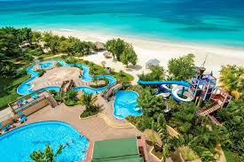
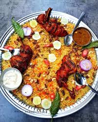

My First Blog Post
Published on February 24, 2025
Travel is the movement of people between distant geographical locations. Travel can be done by foot, bicycle, automobile, train, boat, bus, airplane, ship or other means, with or without luggage, and can be one way or round trip.!
Read More
VIEW POINT Post
Published on February 23, 2025
Viewpoint tourism is a niche segment within the travel industry that focuses on providing travelers with unique and breathtaking
viewpoints or vantage points from which to admire scenic landscapes, city skylines, natural wonders, and architectural marvels.
Read More

foodie Post
Published on February 25, 2025
Mandi Biryani is famous for its unique preparation method, rich flavours, cultural significance, and communal dining experience.
Its spread from Yemen to other parts of the world has further cemented its status as a beloved dish in global cuisine..
Read More